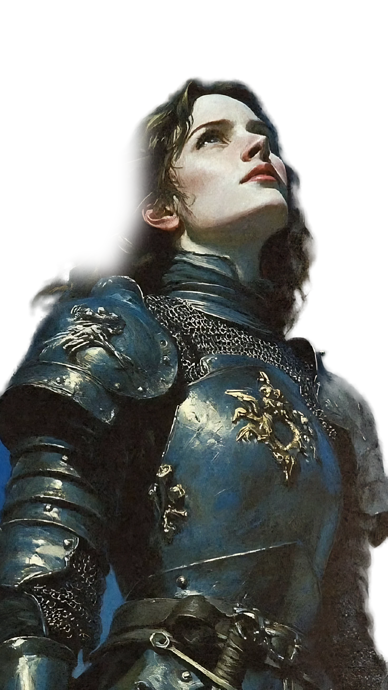
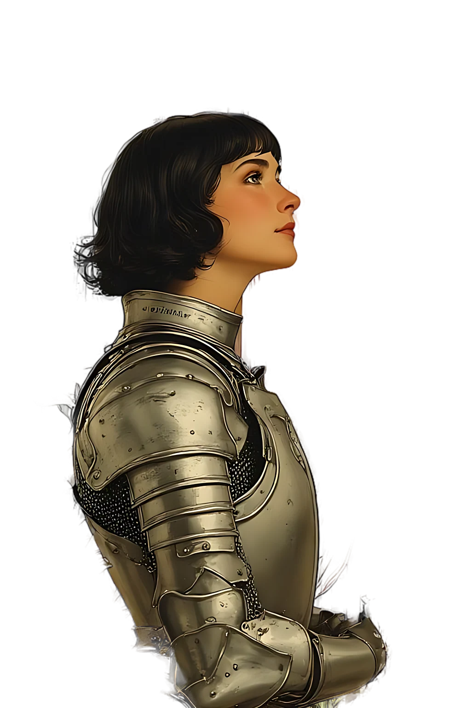
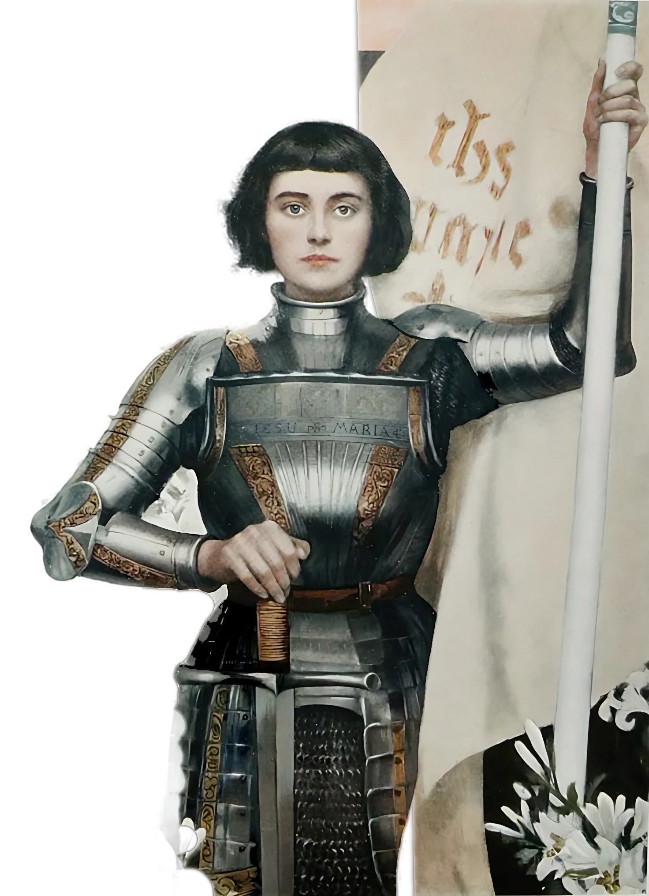

A Person I Admire
Joanof Arc
She was a teenager, but she saved her country.
Press → or swipe to begin
1412
Introduction
Who was she?
- French, born around 1412
- Peasant family, village of Domrémy
- Lived during the Hundred Years' War

Part 1
Appearance
- WhoFrench teenager
- WoreArmor and simple clothes
- HairShort

Part 2
Personality and Character
- BraveNot afraid of powerful men or big armies
- DeterminedBelieved in her mission and never gave up
- Young, yet amazingA great warrior
9
Part 3
Accomplishments
- Freed Orléansin only 9 days
- Won the battle of Patay
- Crowned King Charles VIIat Reims
She saved France and restored national confidence.
Part 4
Important Life Events
- Age 13Heard voices that she believed were saints
- 1430Captured by the enemy
- 1431Burned at the stake at age 19
- 1456Declared innocent
- 1920Made a saint
Conclusion
Courage has no age.
I admire what she did in her life story.
Thank you for listening